Mantenimiento Predictivo & Prescriptivo de Equipos Médicos
De la telemetría industrial de BackBlaze a la prevención de fallos críticos en la red hospitalaria de IMPORTMED S.A. (Nicaragua).
Universidad Nacional de Ingeniería (UNI) · Octubre 2026
Los 4 Niveles de Madurez Analítica
Siguiendo la doctrina de Smith, una solución analítica no se salta etapas. Debe transitar de forma acumulativa del pasado hacia la acción futura recomendada.
1. Descriptivo
¿Qué sucedió?
Síntesis histórica de averías, costos y tiempos de paro (MTTR) en los hospitales.
2. Diagnóstico
¿Por qué sucedió?
Análisis de correlación y explicabilidad XAI (SHAP) para hallar las causas electromecánicas raíz.
3. Predictivo
¿Qué puede suceder?
Modelos de clasificación binaria (XGBoost) para estimar probabilidad de avería en 30 días.
4. Prescriptivo
¿Qué se debe hacer?
Consola de triaje, semáforos, órdenes preventivas automáticas y optimización de rutas.
De los Discos Duros de BackBlaze a IMPORTMED S.A.
¿Por qué este caso? Adaptamos el caso de referencia industrial de BackBlaze / Datatonic (Google Cloud) a la electromedicina hospitalaria en Nicaragua. Misma física de degradación, distinto impacto humano.
| Dimensión | Caso de Estudio de Referencia (BackBlaze / Datatonic) | Implementación en IMPORTMED S.A. |
|---|---|---|
| Activo Crítico | Discos Duros HDD Seagate ST4000DM000 (Cloud Storage) | Analizadores Hematológicos, Autoclaves, Centrífugas Clínicas |
| Impacto del Fallo | Pérdida de disponibilidad en racks de servidores | Parada de diagnósticos de urgencia y cirugías hospitalarias |
| Telemetría | Estadísticas S.M.A.R.T. diarias (55 GB en BigQuery) | Órdenes de servicio Django, MTTR, MTBF, historial de repuestos y preventivos |
| Heurística Base | Regla manual estática: si algún SMART 5, 187, 188, 197 > 0 | "Revisar cada 6 meses calendario o esperar que el cliente llame" |
| Lección de Desbalance | Submuestreo ingenuo 50-50 provocó falsas alarmas masivas | Ponderación asimétrica en función objetivo (scale_pos_weight = 17.04) |
| Horizonte Elegido | Horizontes explorados: 1, 2, 7 y 30 días | N = 30 días principal: tiempo para comprar y reservar en Kardex |
El Costo de un Colapso: Falso Negativo vs Falso Positivo
En el taller predominaba el esquema Run-to-Failure (reactivo). La optimización no busca precisión ciega, sino minimizar el costo clínico y financiero del fallo no previsto.
Colapso intempestivo en sala hospitalaria: suspensión de cirugías, fletes de emergencia, rotura en cascada de piezas y penalización por servicio.
Inspección preventiva innecesaria: 2 horas de técnico biomédico para revisión de tolerancias y limpieza óptica preventiva.
Las 6 Fases del Ciclo de Vida de Data Analytics
Estructura de ejecución de extremo a extremo, asegurando trazabilidad y cero atajos metodológicos.
Descubrimiento
Definición de metas, línea base empírica, matriz de costos ($500 vs $40) y horizonte N = 30 días.
Preparación de Datos
Poblado relacional en SQLite, auditoría de integridad estricta y Feature Store longitudinal con ventanas móviles.
Planificación
Formulación de clasificación binaria y partición temporal Out-of-Time para erradicar el Data Leakage.
Construcción
Torneo de algoritmos, calibración de hiperparámetros con XGBoost y auditoría de interpretabilidad SHAP.
Comunicación
Visualizaciones analíticas de soporte, curvas de trade-off y narrativa adaptada a médicos y directores.
Operacionalización
Modelo dimensional en estrella para Power BI Desktop y consola prescriptiva de órdenes de taller.
De 2 Equipos a 9,400 Registros Coherentes
La base original en db.sqlite3 contenía 2 registros. Se desarrolló poblar_datos_importmed.py
con lógica física electromecánica (Curva de la Bañera) para simular 3.5 años de historial hospitalario.
Parque Biomédico Realista
229 equipos biomédicos en 17 centros hospitalarios (Managua, León, Matagalpa...) en marcas líderes (Mindray, Rayto, Sysmex, Roche...).
Ley de Omisión de Preventivos
Si un equipo supera los 180 días sin preventivo, su riesgo instantáneo de avería se multiplica por 3.2, emulando la fatiga de empaques y motores.
Auditoría de Integridad: 0 Errores
verificar_integridad.py certificó cero órdenes huérfanas y estricta causalidad temporal (cero fechas de entrega anteriores a la orden).
Feature Store Longitudinal & Partición Anti-Leakage
Construcción de una tabla analítica plana mediante fotografías mensuales periódicas (snapshots).
Diseño del Feature Store (30 Columnas)
- ▸ Dimensiones: Serial, marca, modelo, hospital, departamento y antigüedad.
- ▸ Ventanas Móviles: Averías en últimos 30 y 90 días, días desde última falla, MTBF acumulado.
- ▸ Confiabilidad: Días desde último preventivo, preventivos omitidos, tasa de cumplimiento.
- ▸ Financiero: Costo acumulado mano de obra, costo en repuestos y piezas gastadas.
- ▸ Target Binario:
falla_proximos_30d(1 si ocurre avería correctiva, 0 si no).
Partición Temporal Out-of-Time
Nunca se usó división aleatoria estándar para evitar contaminar el pasado con datos del futuro (Data Leakage). Se aplicó un corte absoluto en el 1 de junio de 2025:
✓ Estabilidad perfecta de la tasa natural de fallos (~5.6%).
Torneo de Algoritmos & XGBoost Campeón
Con solo un 5.54% de fallos, un árbol ordinario predeciría siempre "equipo sano".
En lugar del submuestreo de BackBlaze que disparó falsas alarmas, se aplicó ponderación con scale_pos_weight = 17.04.
| Algoritmo / Enfoque | Familia | Recall (%) | Precision (%) | F₂-Score | Fallos Detectados (TP) | Fallos Omitidos (FN) |
|---|---|---|---|---|---|---|
| Heurística de Taller | Regla manual de 6 meses | 12.76% | 4.42% | 0.0927 | 25 / 196 | 171 colapsos no vistos |
| Regresión Logística | Lineal / Paramétrico | 45.41% | 7.17% | 0.2196 | 89 / 196 | 107 |
| Random Forest | Ensamble Bagging | 1.53% | 5.17% | 0.0178 | 3 / 196 | 193 (ultra conservador) |
| XGBoost Calibrado | Gradient Boosting (Final) | 52.55% | 5.98% | 0.2056 | 103 / 196 | 93 (Mínimo de FN) |
Curvas ROC y Precision-Recall
Evaluación sobre el conjunto de test independiente (3,435 observaciones y 196 fallos físicos reales).
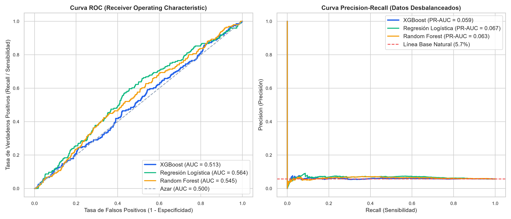
Matrices de Confusión de los 4 Modelos
Desglose visual de los cuatro cuadrantes operativos: Verdaderos Positivos, Falsos Negativos, Falsos Positivos y Verdaderos Negativos.
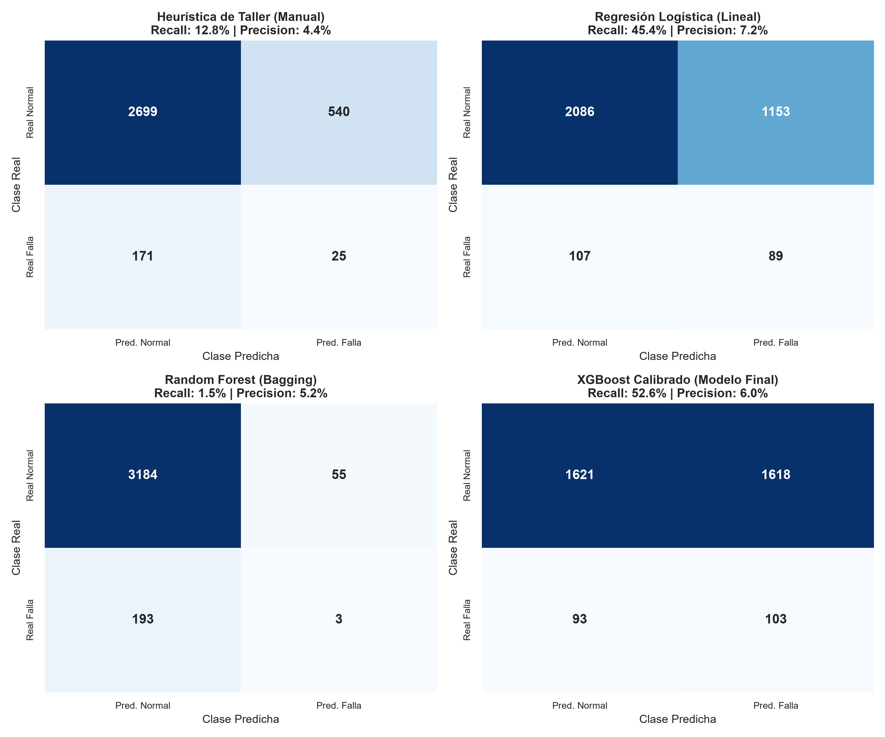
Calibración del Umbral: τ = 0.22
El umbral estándar 0.50 no es aplicable ante costos asimétricos. Minimizamos el costo financiero y maximizamos el F2-Score.
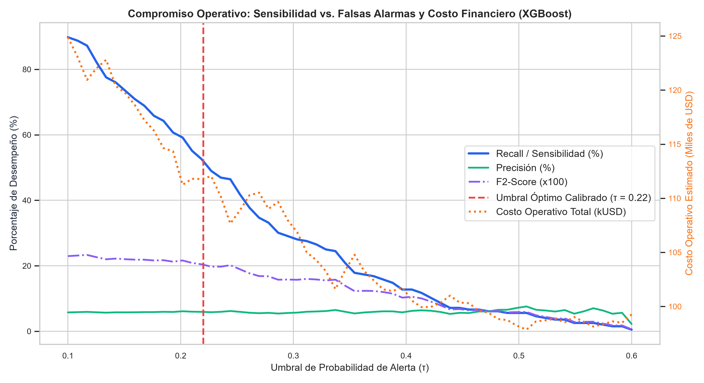
Distribución de Probabilidad y Semáforo Clínico
Densidad KDE que separa a los activos sanos de los que colapsarán en 30 días, fundamentando los cortes del semáforo.
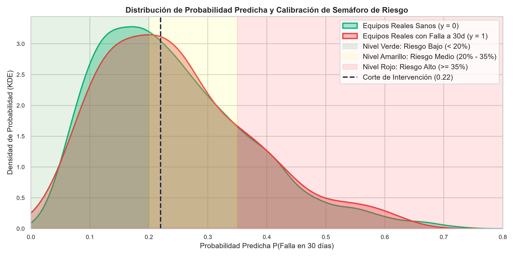
Ranking Global de Variables: |SHAP| Medio
¿Qué hace que un equipo médico falle en Nicaragua? SHAP audita las contribuciones matemáticas del modelo.
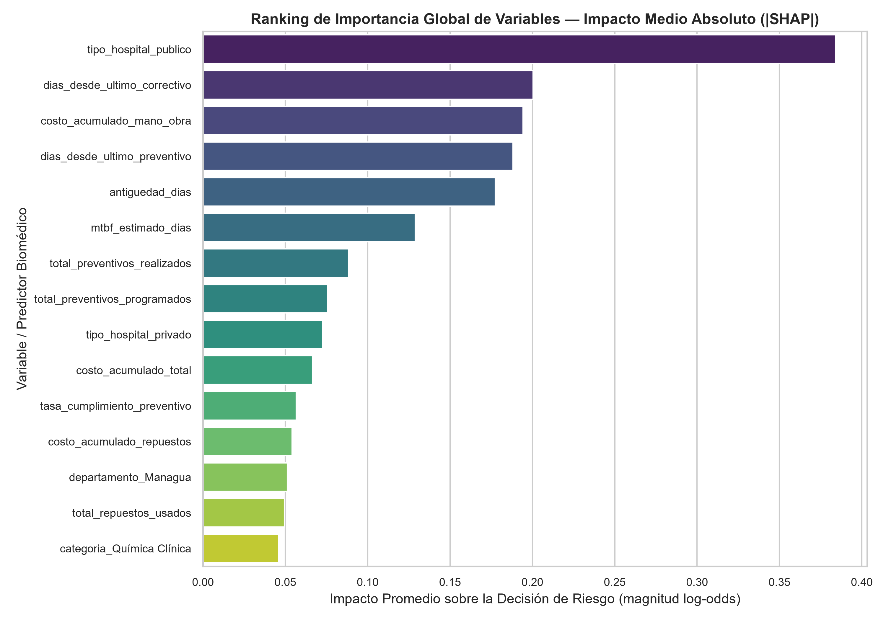
SHAP Beeswarm Plot: Dispersión de Impacto
Cada punto representa un snapshot de un equipo médico. Puntos rojos indican valores altos de la variable; puntos azules, valores bajos.
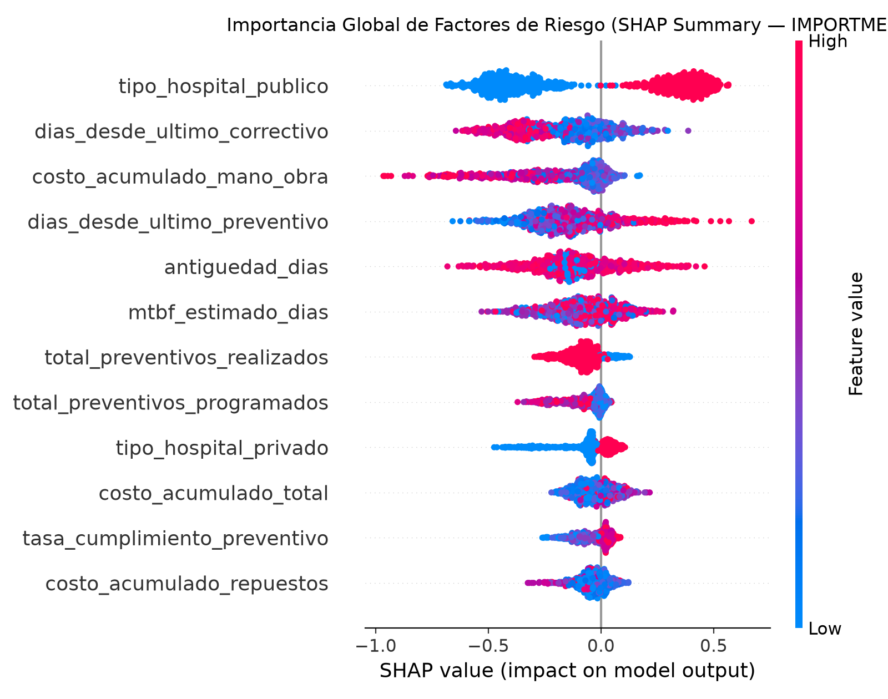
El Efecto Umbral a los 180 Días sin Preventivo
Análisis de dependencia no lineal: validación empírica de la regla semestral de los fabricantes biomédicos.
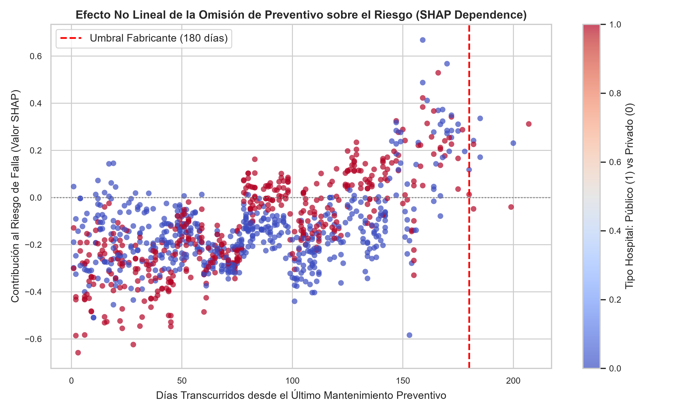
Explicación Local SHAP: Caso Clínico A vs Caso B
Para cada máquina, el sistema entrega la justificación individual exacta de por qué está en alerta o en calma.
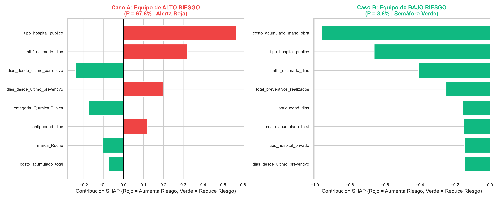
• Hospital Público MINSA: +35%
• 210 días sin preventivo: +28%
• 2 averías recientes en 90 días: +12%
👉 Acción: Orden inmediata y reserva de válvula solenoide.
• Laboratorio privado: -15%
• Solo 45 días desde preventivo: -12%
• 380 días de estabilidad sin fallos: -10%
👉 Acción: Mantener operación normal.
Arquitectura en Estrella: Motor VertiPaq & 9 Entidades
Esquema dimensional en estrella (Star Schema) configurado bajo relaciones estrictas de uno a varios (1:N) y dirección de filtro cruzado única para garantizar máxima compresión y velocidad DAX en memoria.
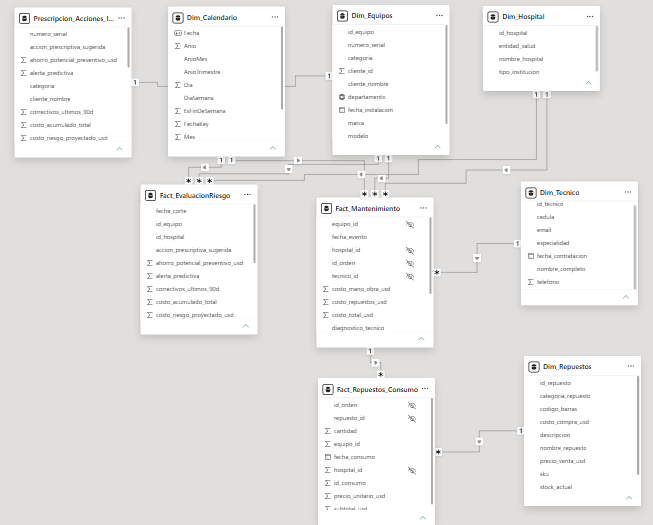
• 3 Tablas de Hechos (Fact_): Mantenimiento (historial operativo), Repuestos Consumo (piezas por orden) y Evaluación de Riesgo (scores SHAP).
• 1 Entidad Prescriptiva:
Prescripcion_Acciones_Inmediatas vinculada a Dim_Equipos[numero_serial].
Fact_Mantenimiento filtra $1:\infty$ por id_orden a Fact_Repuestos_Consumo, permitiendo auditar con exactitud el costo de mano de obra y el desgaste de piezas reemplazadas en cada intervención.
Página 1: Torre de Control & Semáforo Hospitalario
Visión macroeconómica y espacial de los 229 activos. La corrección DAX mediante ALL(Fact_EvaluacionRiesgo) desbloqueó el estado real del parque.
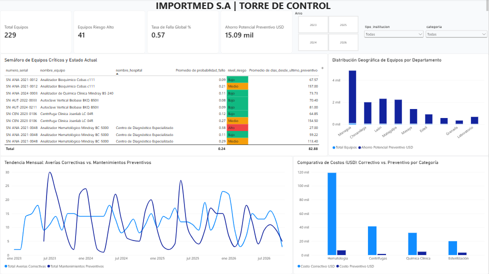
Página 2: Diagnóstico Causal & Degradación SHAP
Drill-through por número de serie. El análisis revela que la falla crítica no ocurre a los 180 días, sino entre los días 70 y 125.
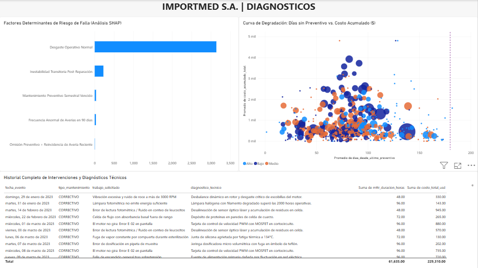
| Componente Crítico | Costo Unit. | Parada (MTTR) | Impacto Hospitalario |
|---|---|---|---|
| Lámpara Halógena | $143 USD | 72 - 96 horas | Suspensión fotometría |
| Empaque Silicona | $130 USD | 48 - 72 horas | Pérdida estanqueidad autoclave |
| Jeringa Dosificadora | $202 USD | 72 - 96 horas | Error aspiración hematología |
Página 3: Consola Prescriptiva, Rutas & Kardex
Planificación táctica: Factor de protección de 27.54x, optimización en dos brigadas y monitoreo de inventario crítico.
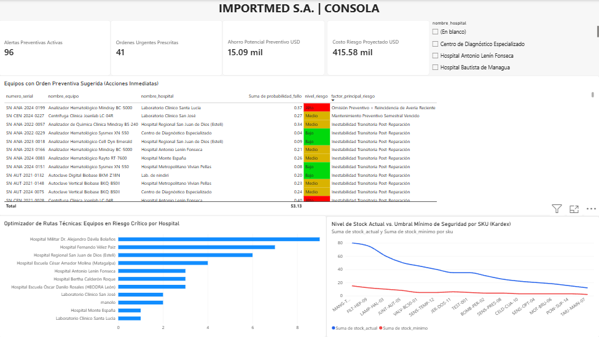
| SKU | Repuesto Crítico | Stock | Mín | Estado |
|---|---|---|---|---|
CELD-CUA-10 |
Celda de Cuarzo | 12 | 3 | Crítico |
SENS-OPT-04 |
Sensor Óptico | 15 | 4 | Crítico |
MOT-BRU-06 |
Motor Brushless | 18 | 5 | Crítico |
POW-SUP-14 |
Fuente de Poder | 20 | 6 | Crítico |
TARJ-MAIN-07 |
Tarjeta Electrónica | 22 | 4 | Crítico |
Del Diagnóstico a la Decisión: Impacto Demostrado
Una solución de analítica avanzada que transforma la confiabilidad médica en Nicaragua y la rentabilidad del taller.
Factor de Protección
$15,090 USD de inversión preventiva blindan $415,580 USD en riesgo.
Nuevo Ciclo Crítico
Reducción formal del intervalo de 180 a 90 días en hematología intensiva.
Rutas Agrupadas
Cobertura del 63.4% de emergencias en Managua, León, Estelí y Matagalpa.
Reorden en Kardex
Compras anticipadas para tarjetas, sensores ópticos y motores brushless.